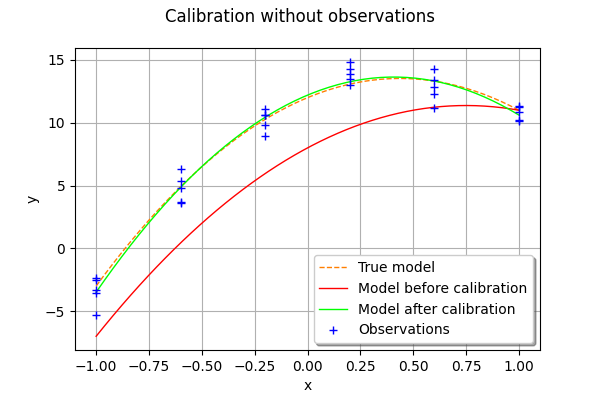

Calibration without observed inputs¶
The goal of this example is to present the calibration of a model which does not have observed inputs.
In this case, there are, however, several outputs to be calibrated.
[1]:
import openturns as ot
This model is linear in and identifiable. It is derived from the equation
at . Therefore, it has 3 inputs and 6 outputs.
[2]:
g = ot.SymbolicFunction(
["a", "b", "c"],
[
"a + -1.0 * b + 1.0 * c",
"a + -0.6 * b + 0.36 * c",
"a + -0.2 * b + 0.04 * c",
"a + 0.2 * b + 0.04 * c",
"a + 0.6 * b + 0.36 * c",
"a + 1.0 * b + 1.0 * c",
],
)
outputDimension = g.getOutputDimension()
outputDimension
[2]:
6
[3]:
trueParameter = ot.Point([12.0, 7.0, -8.0])
trueParameter
[3]:
[12,7,-8]
[4]:
Theta1 = ot.Dirac(trueParameter[0])
Theta2 = ot.Dirac(trueParameter[1])
Theta3 = ot.Dirac(trueParameter[2])
inputRandomVector = ot.ComposedDistribution([Theta1, Theta2, Theta3])
The candidate value is chosen to be different to the true parameter value.
[5]:
candidate = ot.Point([8.0, 9.0, -6.0])
calibratedIndices = [0, 1, 2]
model = ot.ParametricFunction(g, calibratedIndices, candidate)
We consider a multivariate gaussian noise with zero mean, standard deviation equal to 0.05 and independent copula.
The independent copula implies that the errors of the 6 outputs are independent.
[6]:
outputObservationNoiseSigma = 1.0
meanNoise = ot.Point(outputDimension)
covarianceNoise = ot.Point(outputDimension, outputObservationNoiseSigma)
R = ot.IdentityMatrix(outputDimension)
observationOutputNoise = ot.Normal(meanNoise, covarianceNoise, R)
observationOutputNoise
[6]:
Normal(mu = [0,0,0,0,0,0], sigma = [1,1,1,1,1,1], R = 6x6
[[ 1 0 0 0 0 0 ]
[ 0 1 0 0 0 0 ]
[ 0 0 1 0 0 0 ]
[ 0 0 0 1 0 0 ]
[ 0 0 0 0 1 0 ]
[ 0 0 0 0 0 1 ]])
Finally, the generate the outputs by evaluating the exact outputs of the function and adding the noise.
We use a sample with size equal to 5.
[7]:
size = 5
# No observations: pass a sample of dimension 0
inputObservations = ot.Sample(size, 0)
# Generate exact outputs
inputSample = inputRandomVector.getSample(size)
outputStress = g(inputSample)
# Add noise
sampleNoise = observationOutputNoise.getSample(size)
outputObservations = outputStress + sampleNoise
We are now ready to perform the calibration.
[8]:
algo = ot.LinearLeastSquaresCalibration(
model, inputObservations, outputObservations, candidate, "SVD"
)
algo.run()
calibrationResult = algo.getResult()
[9]:
parameterMAP = calibrationResult.getParameterMAP()
parameterMAP
[9]:
[12.2026,7.05271,-8.63656]
We observe that the estimated parameter is relatively close to the true parameter value.
[10]:
parameterMAP - trueParameter
[10]:
[0.202567,0.0527063,-0.636555]
Graphical validation¶
We now validate the calculation by drawing the exact function and compare it to the function with estimated parameters.
[11]:
fullModel = ot.SymbolicFunction(["a", "b", "c", "x"], ["a + b * x + c * x^2"])
parameterIndices = [0, 1, 2]
[12]:
trueFunction = ot.ParametricFunction(fullModel, parameterIndices, trueParameter)
trueFunction
[12]:
ParametricEvaluation([a,b,c,x]->[a + b * x + c * x^2], parameters positions=[0,1,2], parameters=[a : 12, b : 7, c : -8], input positions=[3])
[13]:
beforeCalibrationFunction = ot.ParametricFunction(fullModel, parameterIndices, candidate)
beforeCalibrationFunction
[13]:
ParametricEvaluation([a,b,c,x]->[a + b * x + c * x^2], parameters positions=[0,1,2], parameters=[a : 8, b : 9, c : -6], input positions=[3])
[14]:
calibratedFunction = ot.ParametricFunction(fullModel, parameterIndices, parameterMAP)
calibratedFunction
[14]:
ParametricEvaluation([a,b,c,x]->[a + b * x + c * x^2], parameters positions=[0,1,2], parameters=[a : 12.2026, b : 7.05271, c : -8.63656], input positions=[3])
[15]:
abscissas = [-1.0, -0.6, -0.2, 0.2, 0.6, 1.0]
xmin = min(abscissas)
xmax = max(abscissas)
[17]:
npoints = 50
graph = ot.Graph("Calibration without observations", "x", "y", True, "bottomright")
curve = trueFunction.draw(xmin, xmax, npoints).getDrawable(0)
curve.setLineStyle("dashed")
curve.setLegend("True model")
curve.setColor("darkorange1")
graph.add(curve)
# Before calibration
curve = beforeCalibrationFunction.draw(xmin, xmax, npoints)
curve.setLegends(["Model before calibration"])
curve.setColors(["red"])
graph.add(curve)
# After calibration
curve = calibratedFunction.draw(xmin, xmax, npoints)
curve.setLegends(["Model after calibration"])
curve.setColors(["green"])
graph.add(curve)
# Observations
for i in range(outputDimension):
cloud = ot.Cloud(ot.Sample([[abscissas[i]]] * size), outputObservations[:, i])
cloud.setColor("blue")
if i == 0:
cloud.setLegend("Observations")
graph.add(cloud)
graph
[17]:

We notice that the calibration produces a good fit to the data with only 5 observations for each output, leading to a total of 5 (observations per output) * 6 (outputs) = 30 observations.
Still, we notice a small discrepancy between the true mode land the model after calibration, but this discrepancy is very small.
Actually, this was made much easier from the fact that the model is linear with respect to the calibrated parameters a, b and c.